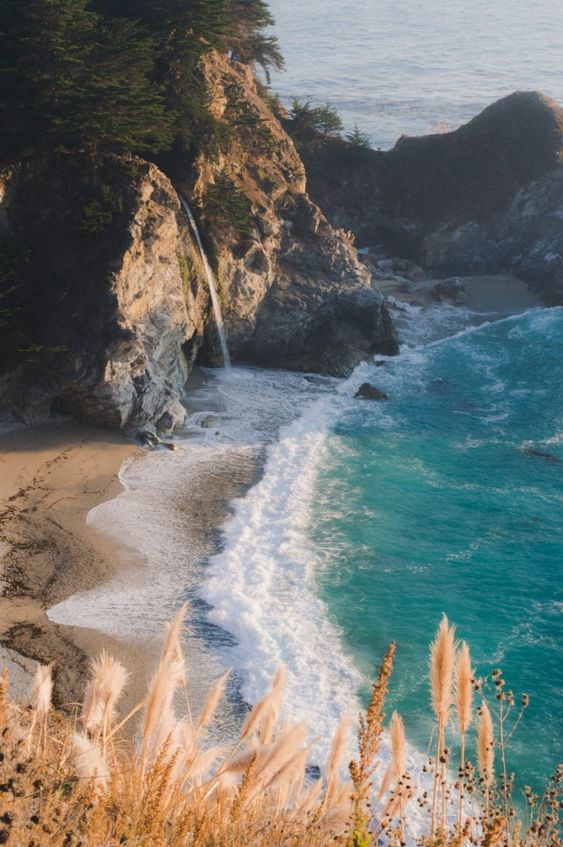
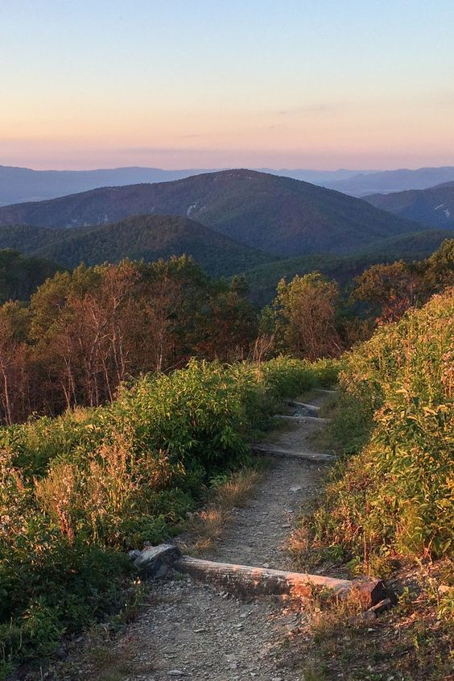
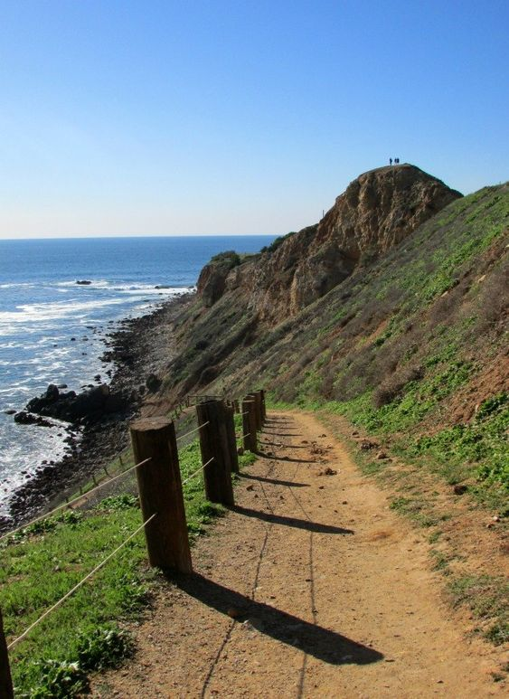

Why?
 During quarentine it was hard to go to the gym, so for exercise, sometimes my friends and I would go on hikes together. This was a great way for us to hangout while also engaging in exercise and being socially distant. Going on hikes with friends is a great way to exercise and stay active while also enjoying the outdoors and socializing safely. Here are some ways in which hiking with friends can be a beneficial activity during quarantine:
Being outdoors: Spending time in nature has been shown to have positive effects on mental health, such as reducing stress and anxiety, improving mood, and increasing feelings of well-being. Hiking with friends allows you to enjoy the benefits of being outdoors while also socializing and getting some exercise.
Exercise: Hiking is a great form of exercise that engages the whole body and helps to improve cardiovascular health, muscle strength, and endurance. It can also provide a mental boost and reduce stress levels.
Past Hikes
 Some of my past hikes that I have enjoyed recently are the hike to the Hollywood Sign here in LA. I went with some of my friends on a nice warm, sunny day. The hike was pretty short and only took about 2-3 hours; however, we wished there was more shady as it was a pretty hot day.
Another hike I went on over the summer was a hike in Hawaii. I went on this hike with 5 of my friends and we are all slightly directionally challenged. While on the trail, we noticed that we were walking in circles. In the end, we ended up off the trail and on a golf course which we walked around before heading back to our hotel.
Lastly, one of my most memorable hikes was in Costa Rica. I went on this one with some of my classmates and professors. The weather was perfect as it was warm but breezy. However, the ground was too slippery, and I fell about 10 different times. However, I still had a good time and we ended up at a little lake with a waterfall.
Future Hikes
 One hike I want to go on is to Mission Peak in Bay Area. I've always wanted a picture with the famous pole. I've heard that the distance itself is not too bad, but the hike is very steep which makes it harder.
I would also like to go on hikes in Big Sur. While I've been before, I was quite young so I would like to go again now that I am older. Big Sur is a beautiful region on the central coast of California and offers many scenic hiking trails. The McWay Waterfall Trail is a short, easy hike that leads to an overlook with stunning views of McWay Falls. The trail is about half a mile round trip and is located in Julia Pfeiffer Burns State Park.